心のカルテ：関雄介
掲載確認：了解あり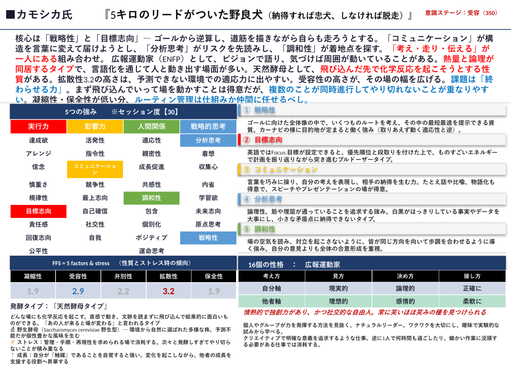
本人に会ったときの掲載確認用です。掲載確認はすべて「まだ」から始めています。
| # | 名前 | まとまり | 材料ファイル名 | 掲載確認 |
|---|---|---|---|---|
| 1 | 関雄介 | カモシカスタッフ | 心のカルテ_関 雄介_20260512_v3.pptx（スライド1・発酵タイプ版） | 了解あり |
| 2 | 関恵 | カモシカスタッフ | 心のカルテ_20260419.pptx（スライド1・発酵タイプ版） | 了解あり |
| 3 | 関◯ | 学生版 | 心のカルテ — 関◯（2026年7月12日）.pdf（ページ3） | まだ |
| 4 | 福◯ | きょうどこ？ラボ | 心のカルテ_きょうどこラボ_9名_20260715.pptx（スライド1） | 了解あり |
| 5 | 高◯ | きょうどこ？ラボ | 心のカルテ_きょうどこラボ_9名_20260715.pptx（スライド2） | 了解あり |
| 6 | 児◯ | きょうどこ？ラボ | 心のカルテ_きょうどこラボ_9名_20260715.pptx（スライド3） | 了解あり |
| 7 | 荒◯ | きょうどこ？ラボ | 心のカルテ_きょうどこラボ_9名_20260715.pptx（スライド4） | 了解あり |
| 8 | 矢◯ | きょうどこ？ラボ | 心のカルテ_きょうどこラボ_9名_20260715.pptx（スライド5） | 了解あり |
| 9 | み◯ | きょうどこ？ラボ | 心のカルテ_きょうどこラボ_9名_20260715.pptx（スライド6） | 了解あり |
| 10 | さ◯ | きょうどこ？ラボ | 心のカルテ_きょうどこラボ_9名_20260715.pptx（スライド7） | 了解あり |
| 11 | り◯ | きょうどこ？ラボ | 心のカルテ_きょうどこラボ_9名_20260715.pptx（スライド8） | 了解あり |

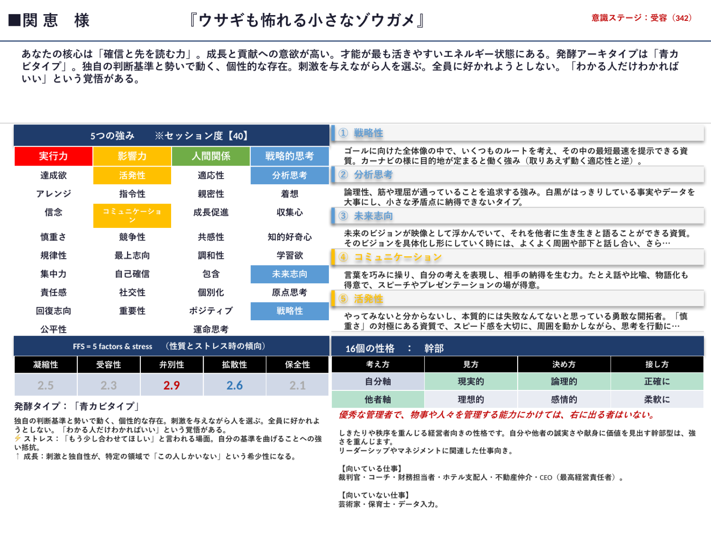
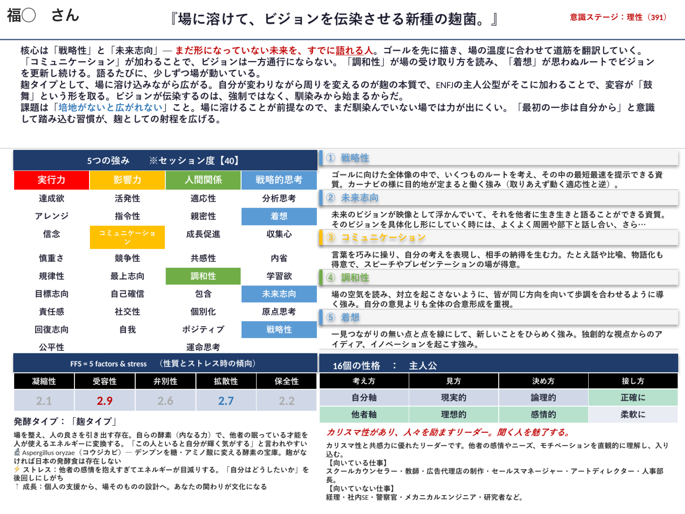
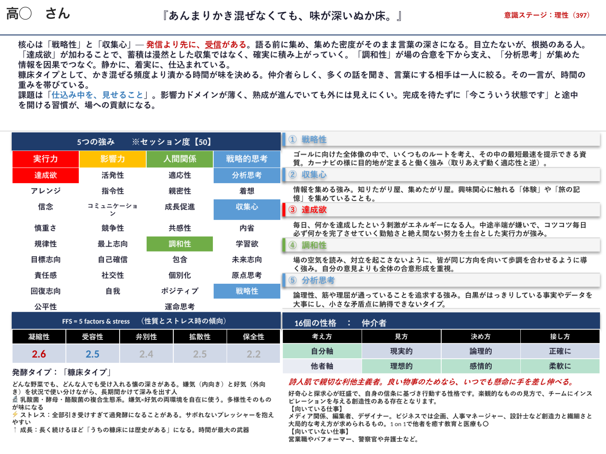
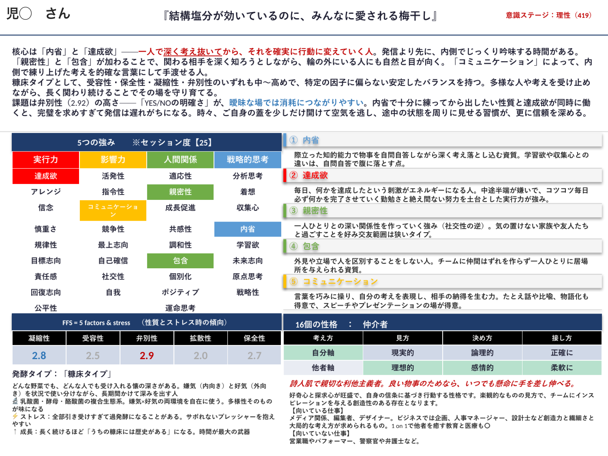
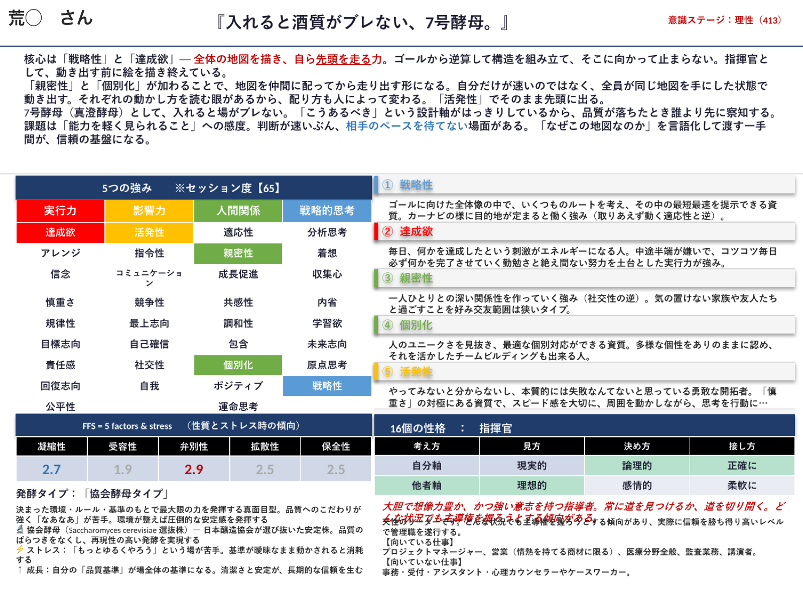
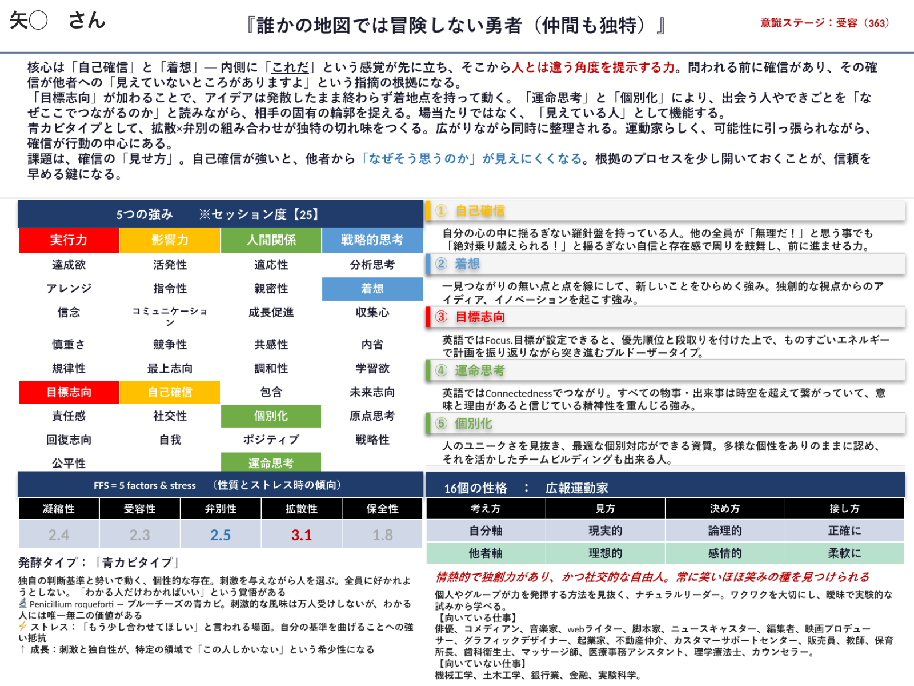
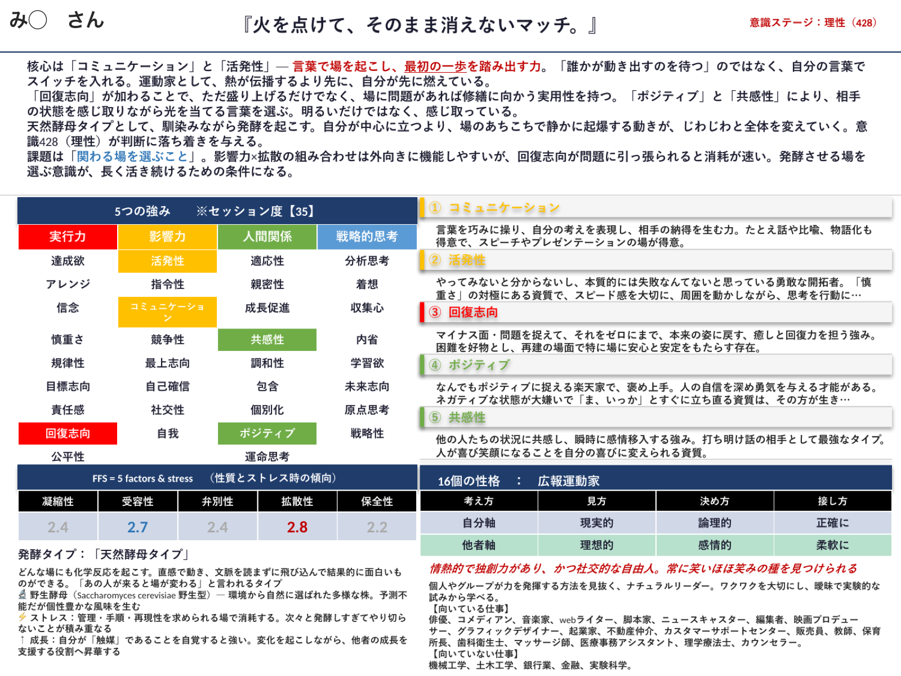
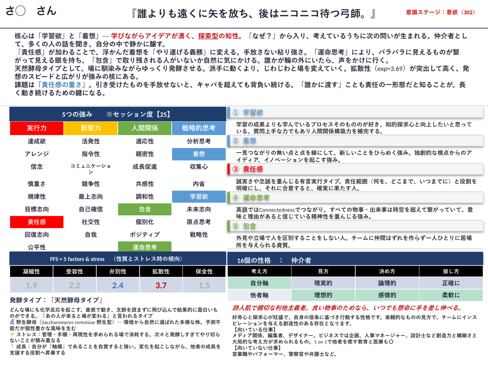
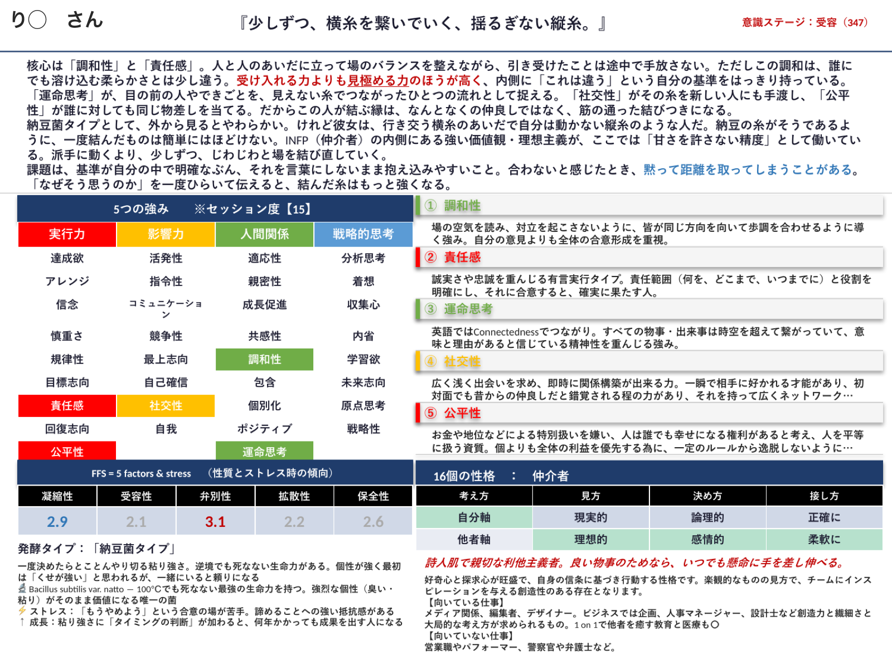
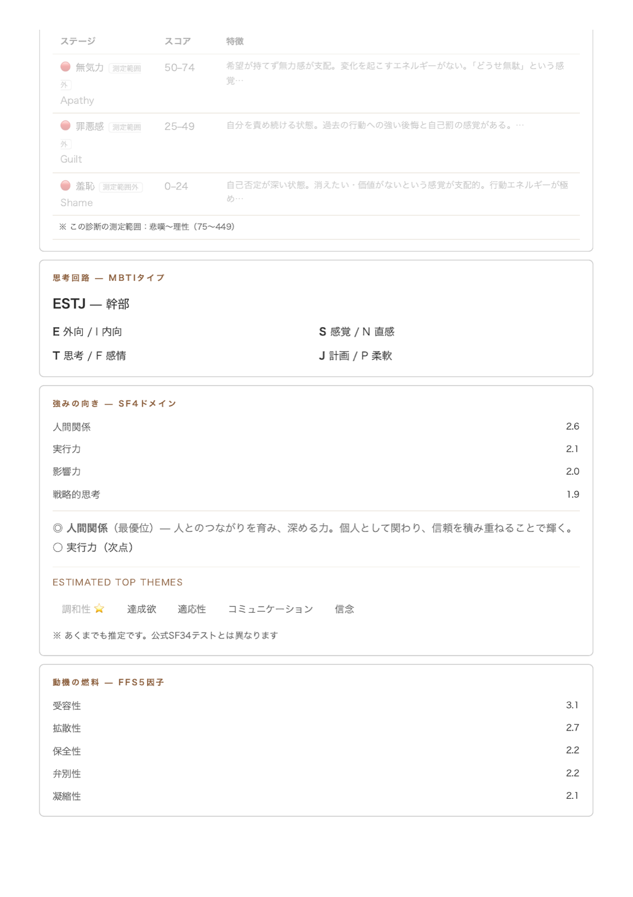
実際のチームの森のカルテです（掲載の了解をいただいています）。
※「もし、きょうどこ？ラボが会社組織だったら？」という仮説的な視点での分析です。
横静かな力から、動かす力へ。
縦場を守るから、場を変えるへ。
2026年7月の森のカルテにある9名の配置です。
やわらかい糸で人と人を結び直す。公平という同じ物差しを保ったまま、離れた者どうしをつなぐ菌糸になる。
場に飛び込みエネルギーを持ち込む。内側から場を動かす触媒。
役割は場面によって変わりうる、仮説的分類です。
P型（探索型）が9人中7人。可能性を探り続けて決断が遅れやすい。意思決定のルールを事前に決めておくと動きが速くなる。
荒◯さんへの過集中を避ける。唯一のENTJとして設計・決断を一手に引き受けやすい。役割分散の設計を意識的に。
さ◯さんの発想の射程が一番長い。発想は誰より遠くに飛ぶが引き受けすぎる。負荷分散が必要。
組み合わせは、元の森のカルテの関係図にある見立てです。
| この人 | 任せると光る仕事 | 組むと気持ちいい相手 | まわりができること |
|---|---|---|---|
| み◯点火「火を点けて、そのまま消えないマッチ。」 | 言葉で場を起こし、最初の一歩を踏み出す。 | 荒◯さん（点火→構造化）・矢◯さん（ENFP共鳴） | 発酵させる場を選ぶ意識が、長く活き続けるための条件になる。 |
| 矢◯拡散「誰かの地図では冒険しない勇者（仲間も独特）」 | 誰の地図も使わない冒険者。独自ルートを行く。 | さ◯さん（着想×学習欲）・み◯さん（ENFP共鳴） | 根拠のプロセスを少し開いておくことが、信頼を早める鍵になる。 |
| 福◯伝染「場に溶けて、ビジョンを伝染させる新種の麹菌。」 | ゴールを先に描き、場の温度に合わせて道筋を翻訳していく。 | さ◯さん（発想→伝播） | 「最初の一歩は自分から」と意識して踏み込む習慣が、麹としての射程を広げる。 |
| 高◯蓄積「あんまりかき混ぜなくても、味が深いぬか床。」 | 語る前に集め、集めた密度がそのまま言葉の深さになる。 | 荒◯さん（設計→蓄積）・児◯さん（糠床同士） | 完成を待たずに「今こういう状態です」と途中を開ける習慣が、場への貢献になる。 |
| 児◯蓄積「結構塩分が効いているのに、みんなに愛される梅干し」 | 一人で深く考え抜いてから、それを確実に行動に変えていく。 | 高◯さん（糠床同士） | 時々、ご自身の蓋を少しだけ開けて空気を逃し、途中の状態を周りに見せる習慣が、更に信頼を深める。 |
| 荒◯設計「入れると酒質がブレない、7号酵母。」 | 設計図を先に描いて生産する。品質の基準を保つ木。 | み◯さん（点火→構造化）・高◯さん（設計→蓄積） | 「なぜこの地図なのか」を言語化して渡す一手間が、信頼の基盤になる。 |
| さ◯醸成「誰よりも遠くに矢を放ち、後はニコニコ待つ弓師。」 | 学びながらアイデアが湧く、探索型の知性。多くの人の話を聞き、自分の中で静かに醸す。 | 福◯さん（発想→伝播）・矢◯さん（着想×学習欲） | 「どこまで責任を持つか」の境界を一緒に引くことが優先。 |
| り◯結ぶ糸「少しずつ、横糸を繋いでいく、揺るぎない縦糸。」 | 少しずつ、横糸を繋いでいく、揺るぎない縦糸。 | 福◯さん・矢◯さん（横糸を繋ぐ） | 誰と誰をつないでいるかを本人と一緒に言葉にする。 |
| 関 雄介介在「飛び込んだ先で設計する天然酵母」 | ゴールから逆算し、道筋を描きながら自らも走ろうとする。 | 荒◯さん（設計→介在） | ルーティン管理は仕組みか仲間に任せるのが持続の鍵。 |
高◯・矢◯・み◯・さ◯・児◯・関・り◯がP型。可能性を探り続けて決断が遅れやすい。意思決定のルールを事前に決めておくと動きが速くなる。
人数が増えても決断・完結させる力はこの2人のまま。依存がいっそう高まっている。どちらかが抜けるとプロジェクトが止まるリスクがある。
発想は誰より遠くに飛ぶが引き受けすぎる。負荷分散が必要。「どこまで責任を持つか」の境界を一緒に引くことが優先。
蓄積型の2人は完成するまで見せない。「仕込み中を見せる」文化がチームの解像度を上げる。
唯一のENTJとして設計・決断を一手に引き受けやすい。役割分散の設計を意識的に。
誰と誰をつないでいるかを本人と一緒に言葉にすると、この森の関係網が「たまたま」でなく「設計」として見えてくる。